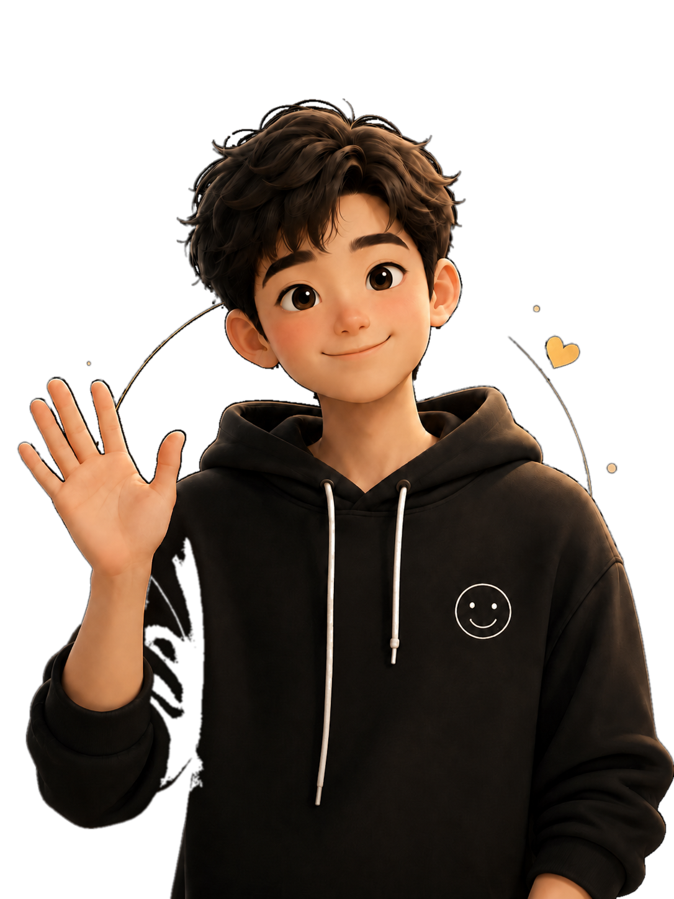
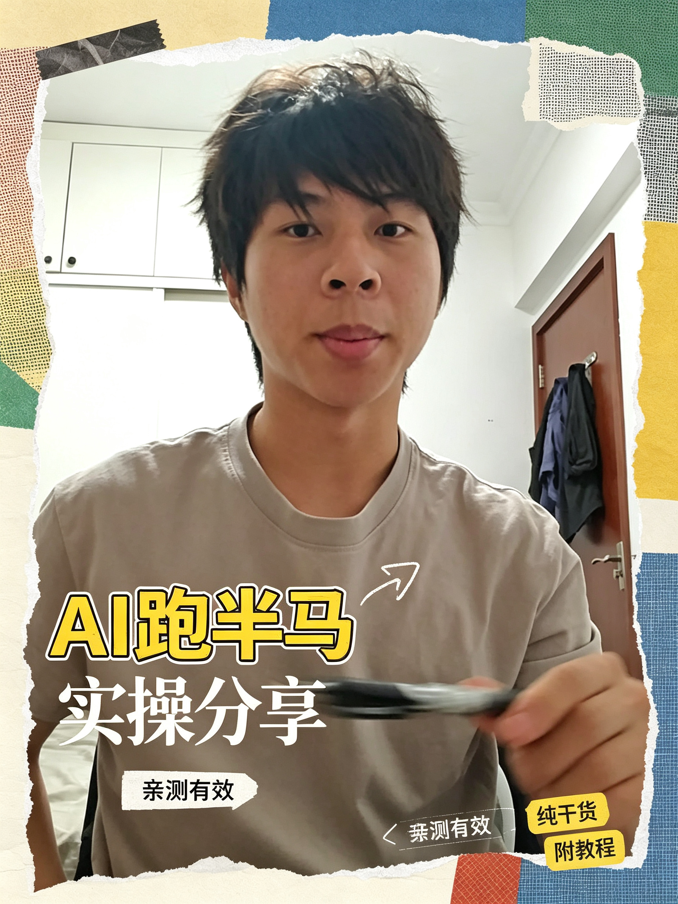
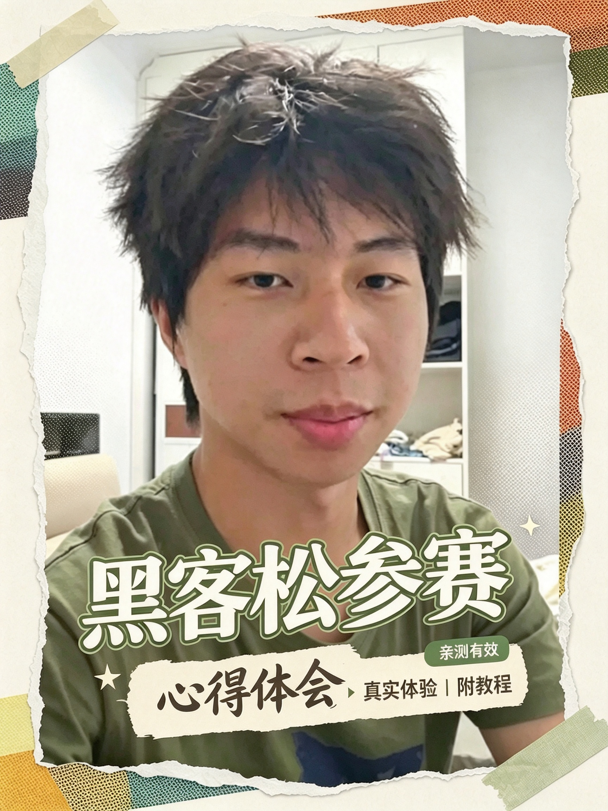
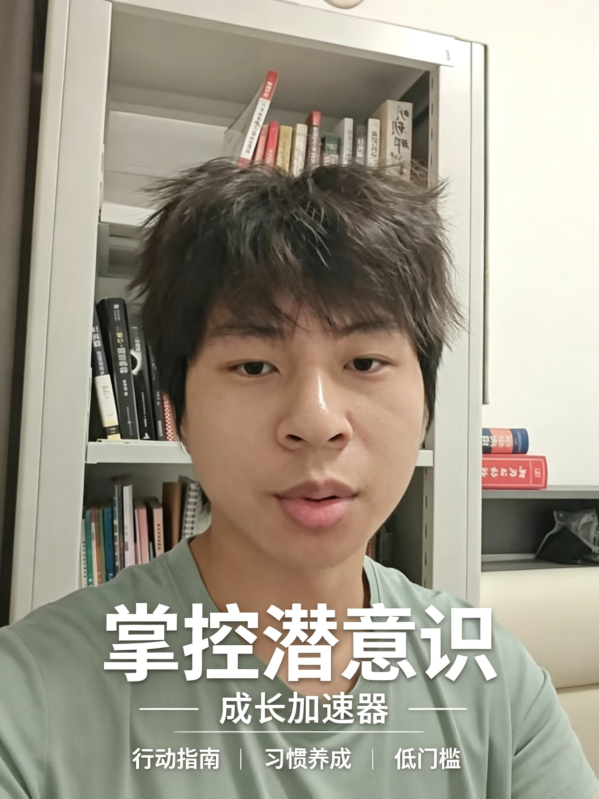

已完成 · 2026 · 团队实践
黑客松比赛
把想象，做成一个可以探索的世界。
2126 人类第二家园计划
如果把目光投向一百年后，人类的第二个家园会是什么样？我参与了这个黑客松团队项目，将关于未来的想象带入一个可交互的 3D 空间。
团队作品在 LPT Demo Day 2026 获“宏大叙事奖”。
我的参与：参与团队项目实践。
2126 / 人类第二家园计划 · 太阳系交互界面

喜欢阅读、表达、AI 和跑步。在真实的尝试里认识自己，也期待认识愿意交流、一起行动的人。
在真实的尝试里，多认识自己一点。
有些问题，亲自做一做才知道。把想象，做成一个可以探索的世界。
如果把目光投向一百年后，人类的第二个家园会是什么样？我参与了这个黑客松团队项目，将关于未来的想象带入一个可交互的 3D 空间。
团队作品在 LPT Demo Day 2026 获“宏大叙事奖”。
我的参与：参与团队项目实践。
思考，也需要被听见。从准备一份讲稿，到回应另一种观点，
我在上场的过程中，练习开口。
先迈出那一步。
不是换一个标签，
是多一次愿意开口。
以前，我甚至会害怕跟便利店店员说话。现在，我愿意参加演讲、站上辩论场，也更愿意主动认识新朋友。
我把它叫作自己“从 I 到 E”的变化。对我来说，是一点点变得更敢表达，也更愿意走出去。
还在做，也还在学。
一些已经写下的思考，一些还在发生的日常。
把想法，认真写下来。
拍摄视频，分享个人心得，也继续练习面对镜头和公开表达。

观看视频 ↗关于用 ChatGPT 辅助半马准备的一次实践分享。

观看视频 ↗记录第一次参加黑客松比赛的体验与思考。

观看视频 ↗围绕行动与习惯养成的个人心得。
作品在新窗口打开；若当前浏览器无法进入，请在手机微信中打开对应链接。
把读过的内容，变成自己的思考。在朋友圈记录《大众经济学》《拐点》，也记下阅读文章时产生的疑问与感悟。留下这些片段，是为了回头看见：哪些想法改变了，哪些问题还值得继续追问。
把一个模糊的问题，聊得更具体。
我接过关于公众号、大学路径选择和视频想法的咨询。在自己有经验的范围内，分享做过的尝试，也一起梳理问题、交换思路。
有时候，讨论从一个还没想清楚的念头开始。把想做的事、眼前的顾虑和可能的选择慢慢说清楚，也是交流的价值。
有时认真思考，
有时只想跑跑步、听听音乐。
AI 辅助学习与做事、阅读与表达练习、走出舒适区的经历……我愿意分享已有的经验，也期待听到不同的看法。
如果你走过更远的路，我很愿意向你学习；如果我们有适合一起做的事，也欢迎聊聊。
如果我们有一个共同好奇的话题，
欢迎加个微信，聊聊。
不用准备一段完美的自我介绍。